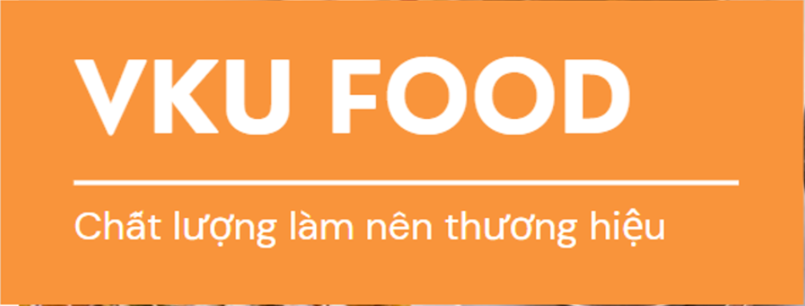
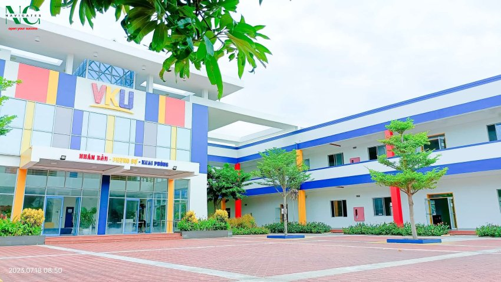
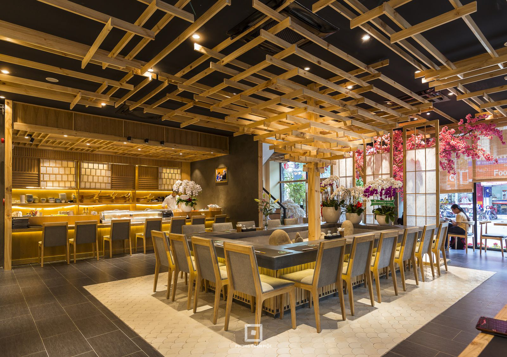

Về VKU FOOD
VKU FOOD là hệ thống đặt món ăn trực tuyến được phát triển bởi sinh viên trường Đại học VKU – ĐH Đà Nẵng. Mục tiêu của chúng tôi là mang đến trải nghiệm đặt món ăn tiện lợi, nhanh chóng, cùng với những món ăn đa dạng và hấp dẫn.

Lịch sử hình thành
Thành lập năm 2020, VKU FOOD bắt đầu từ một cửa hàng nhỏ phục vụ sinh viên trường Đại học VKU. Với chất lượng đồ ăn và dịch vụ tốt, chúng tôi đã phát triển thành hệ thống cung cấp đồ ăn cho toàn thành phố.

Tầm nhìn
Trở thành hệ thống cung cấp đồ ăn nhanh uy tín nhất Đà Nẵng, mang đến cho khách hàng những bữa ăn ngon với giá cả hợp lý.

Đội ngũ của chúng tôi
Trần Công Đạt
Bếp trưởng
10 năm kinh nghiệm ẩm thực
💡 Tại sao chọn VKU FOOD?
- Giao hàng siêu tốc – chỉ trong 30 phút
- Ưu đãi mỗi ngày cho sinh viên
- Đội ngũ nhiệt tình, sẵn sàng hỗ trợ